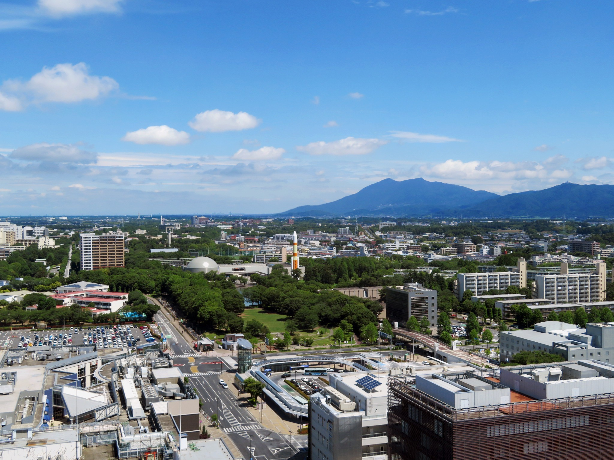
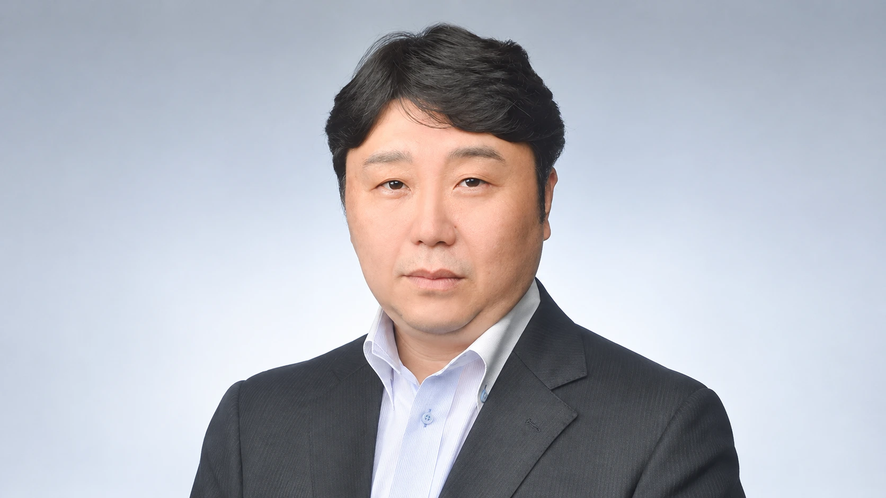

税務業務
日々の税務から、
決算・申告まで。
法人税・所得税・消費税などの申告や各種届出、税務調査の立会いに対応。税に関する疑問を、分かりやすく解きほぐします。

つくば・土浦の小さな会社を支える税理士事務所
日々の経理から、決算・申告・創業のご相談まで。
地域の方とともに2007年開業
法人・個人幅広く対応
創業から決算・申告まで
ごあいさつ
よこしま税理士事務所は、つくば市・土浦市を中心に、
小さな会社や個人事業主の皆さまをサポートしています。
日々の経理から、決算・申告、会社設立まで。
お客様との対話を大切にし、事業の状況に合わせた
柔軟なサービスをご提案します。
「何から始めればいいか分からない」
そんなときも、どうぞお気軽にご相談ください。

事業の今と、これからを支える
日々のお困りごとから、事業の大きな節目まで。
必要なサポートを、一緒に考えます。
ご依頼内容に合わせてお見積もり
事業規模や取引件数、ご依頼範囲を伺い、
事前に料金をご案内します。
顧問料 25,000円〜決算料：顧問料の約5か月分
顧問料 20,000円〜決算料：顧問料の約4か月分
※料金はご依頼内容によって異なります。消費税の取り扱いを含む詳細は、お見積もり時にご案内します。創業初期の費用についてもご相談いただけます。
まずは現在の状況をお聞かせください
お電話・フォームで、ご希望の相談内容をお知らせください。
お問い合わせ→会社の状況とお困りごとを伺い、必要なサポートを整理します。
業務範囲や訪問頻度、料金をご説明し、ご確認後に契約へ進みます。
必要な資料や進め方をご案内し、サポートを開始します。
ご相談の前に
はい。顧問契約を結ばず、決算と税務申告のみをご依頼いただくことも可能です。申告期限に余裕を持ってご相談ください。
もちろんです。帳簿の付け方や領収書の整理、会計ソフトの使い方など、基本的なことからご相談いただけます。
はい。開業時に必要な税務上の届出や経理の準備、資金調達などについてサポートします。会社設立登記は提携先の司法書士をご紹介します。
ご相談いただけます。現在の状況やご希望を伺い、必要な資料と引き継ぎの進め方をご案内します。
事業規模、取引件数、依頼する業務の範囲や訪問頻度などに応じてお見積もりします。ご事情やご予算もお聞かせください。
つくばに根ざした、身近な相談先
税務・会計のご相談や、業務のご依頼を承っています。
ご状況やお困りごとを、まずはお聞かせください。